Do a A-OK sign
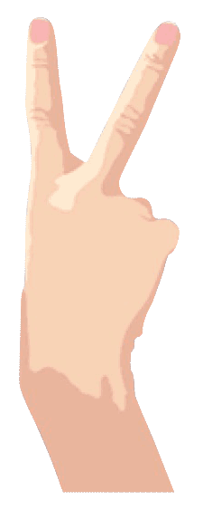 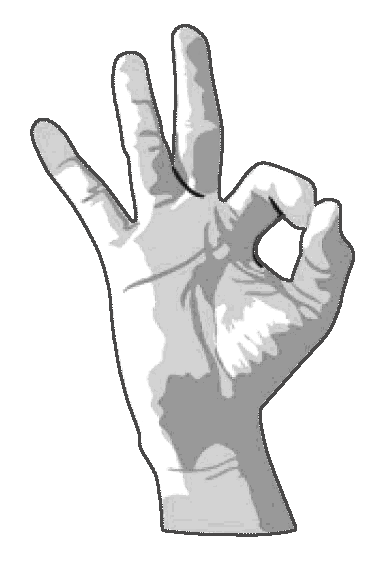 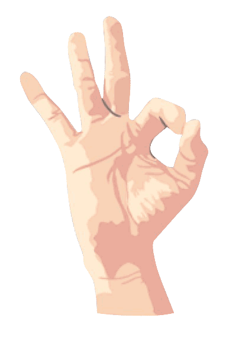
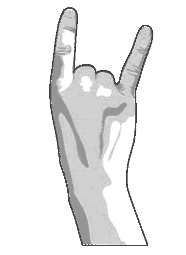
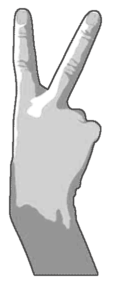
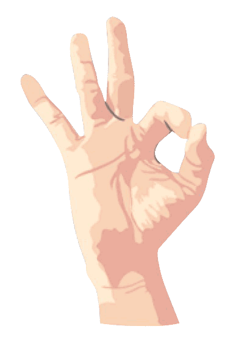
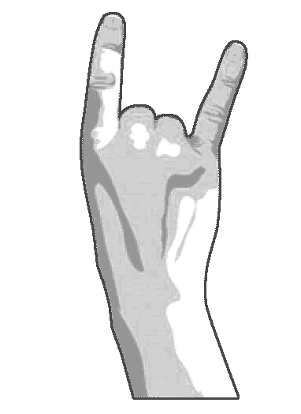
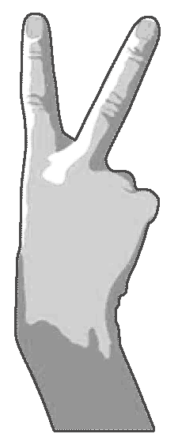
A-OK sign
From insinuating someone is homosexual to calling them an A-hole or simply as a shorthand for Fuck you, the A-OK sign does not necessarily travel well
 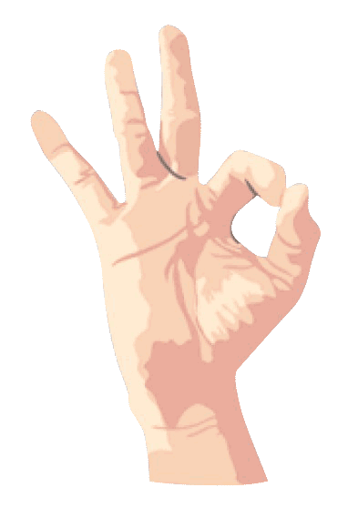
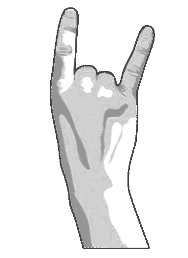
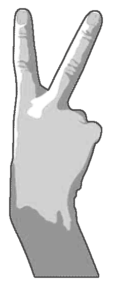
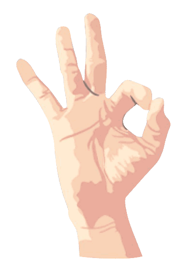
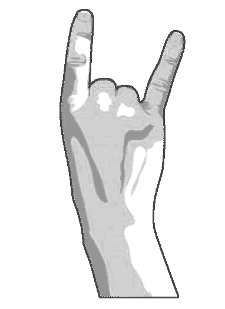
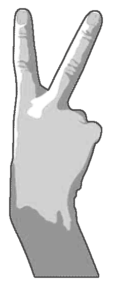
From insinuating someone is homosexual to calling them an A-hole or simply as a shorthand for Fuck you, the A-OK sign does not necessarily travel well